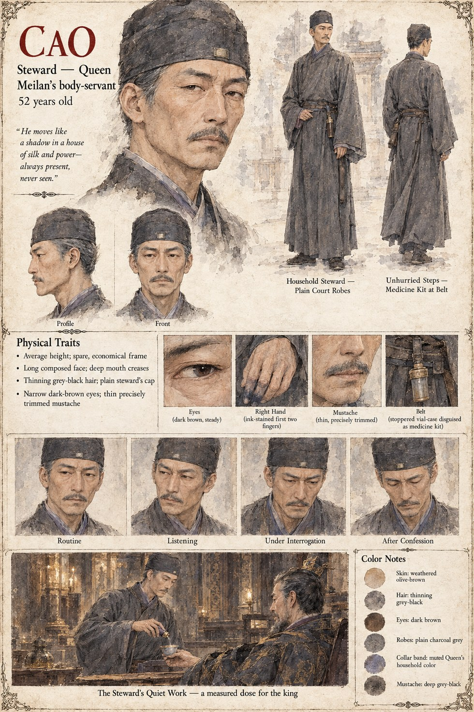

Cao
Steward to Queen Meilan's Household · 52 years old
Steward to Queen Meilan's household for nine years, and the kind of servant a great house is built to stop noticing: plain robes, an unhurried step, a medicine kit at his belt that no one ever asks to see opened. He measures out King Huairen's dose himself, night after night, with the same steady hand he uses for every other household errand, and tells his interrogators afterward that he had never in nine years of service done anything the Queen's household had not, in some fashion, already wanted done.
He confesses the whole of it to Duan's questioning once Mingxuan's suspicions finally catch him, and Chancellor Jian has him executed within the same day — not for the poisoning itself, but for how little time it would have taken him to name who else knew.
“He moves like a shadow in a house of silk and power — always present, never seen.”
Appears in The Listening Water